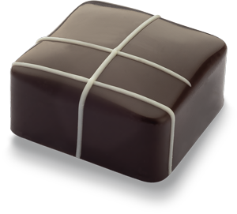

Rica-rica

Suave y aromático ganache con hierba Rica–rica,
cubierto de chocolate blanco 30% cacao.
El intenso sabor de la Rica-rica contrasta a la perfección con la dulzura, cremosidad, y notas lácteas del chocolate blanco. Un maridaje inigualable.
Transpórtate al norte de Chile con el sabor de la Rica-rica. Una hierba nativa del desierto de Atacama que destaca por su intenso aroma y propiedades medicinales. Sus llamativas flores violeta abren en octubre para llenar de color este arbusto, que forma parte del distintivo paisaje

Limón de Pica

Gelée sabor limón de Pica sobre un suave y cremoso relleno sabor limón, cubierto de chocolate blanco 30% cacao.
Con su acidez, el limón de Pica marida perfectamente con el dulzor del chocolate blanco. Un bombón con doble relleno, donde la frescura del gelée contrasta muy bien con la cremosidad del ganache.
Sigue recorriendo las maravillas naturales de Chile con este exquisito bombón de limón de Pica. Viaja hasta el oasis de la localidad de Pica, en la Región de Tarapacá, donde este fruto ha sido cultivado por generaciones y regado por aguas mineralizadas que acentúan su ácido sabor. Un fruto traído al país por los españoles en 1536 y que gracias a las condiciones del clima desértico, desarrolló características.

Lúcuma

Deliciosa crema de pulpa de lúcuma,
cubierta con chocolate leche 34% cacao.
El dulce y profundo sabor de la lúcuma, junto con su textura
untuosa pero delicada, complementa muy bien con las notas
acarameladas del chocolate leche.
Déjate encantar por las bondades del litoral central de Chile con el dulce sabor de este bombón de lúcuma. Un pequeño fruto de color rojo a amarillo-anaranjado cultivado principalmente entre las costas de la Región de Coquimbo y Valparaíso, generalmente utilizado para la elaboración de repostería fina, helados y postres.

Papaya

Bombón relleno de ganache
con pulpa de papaya, cubierto con chocolate leche 34% cacao.
El delicado sabor de la papaya y su gran carácter, nos recuerda frutos maduros como el melón y la pera, por lo que el sutil sabor a tostado del chocolate leche es el complemento ideal para destacarlo.
Quédate en la Región de Coquimbo para disfrutar el inolvidable sabor de la papaya. Una aromática fruta de color amarillo y piel delgada, conocida por sus numerosos beneficios para la salud debido a la cantidad de vitaminas, nutrientes y antioxidantes que contiene. Además es un alimento bajo en calorías y tiene un alto poder digestivo.

Chirimoya

Gelée sabor chirimoya sobre un suave relleno cremoso
de chirimoya, cubierto con chocolate leche 34% cacao.
Este bombón de doble relleno potencia la frescura de la chirimoya con un liviano gelée, que por su suavidad combina perfectamente con la cremosidad del ganache de este mismo fruto. Es así como también el chocolate leche y sus notas a fruta fresca, componen una armonía perfecta de sabores.
Descubre el sabor de uno de los cultivos más importantes en Chile, la chirimoya. Una cremosa, dulce y carnosa fruta tropical, con aroma similar al de la canela. Se caracteriza por su exterior verde, parecido a las escamas de un reptil, e interior blanco con brillantes semillas negras. Un alimento cultivado en Quillota y La Serena que crece de un árbol llamado chirimoyo, el cual puede llegar a medir hasta 8 metros de altura.

Carménère

Ganache en base a vino Carménère,
cubierto de chocolate bitter 58% cacao.
En este bombón, nuestro chocolate bitter marida muy bien con la particular robustez del Carménère, consiguiendo un impecable equilibrio entre estos intensos sabores. Una experiencia sublime.
Continúa recorriendo cada rincón de Chile con este bombón de Carménère. Un tipo de uva originaria de Francia que por mucho tiempo se creyó extinta, pero que luego se descubrió que crecía en Chile, pensando en un principio que era Merlot. Hoy este país sudamericano es el mayor productor de vinos Carménère con sus principales plantaciones en el Valle de Colchagua y Rapel. El nombre de este fruto nace de la palabra francesa carmín, en referencia a su singular color.

Murta

Bombón de chocolate bitter 58% cacao,
relleno con ganache de murta.
En este caso, la acidez y el dulzor de la murta, complementan muy bien con la intensidad y el aroma de nuestro chocolate bitter, generando un maridaje inigualable.
En la zona centro y sur del país se encuentra la murta o murtilla, una planta endémica caracterizada por su agradable sabor y aroma. Sus bayas, de intenso color rojo, fueron utilizadas por los mapuches -pueblo indígena chileno- para preparaciones culinarias y medicinales por sus propiedades antioxidantes, cicatrizantes y antiinflamatorias.

Calafate
Bombón con cremoso relleno de calafate,
cubierto con chocolate bitter 58% cacao.
Siendo una de las bayas más dulces del sur de Chile, el calafate hace que la intensidad y astringencia del chocolate bitter 58% cacao sea la mejor combinación.
Lleva tus sentidos hasta el fin del mundo con la textura, aroma y sabor de este bombón de calafate. Un pequeño fruto de color negro originario de la Patagonia chilena y argentina, con el que los pueblos prehispánicos -como los Kawéskar y los Selknam-, preparaban infusiones para tratar distintas dolencias. Un superalimento con propiedades antiinflamatorias y antioxidantes.